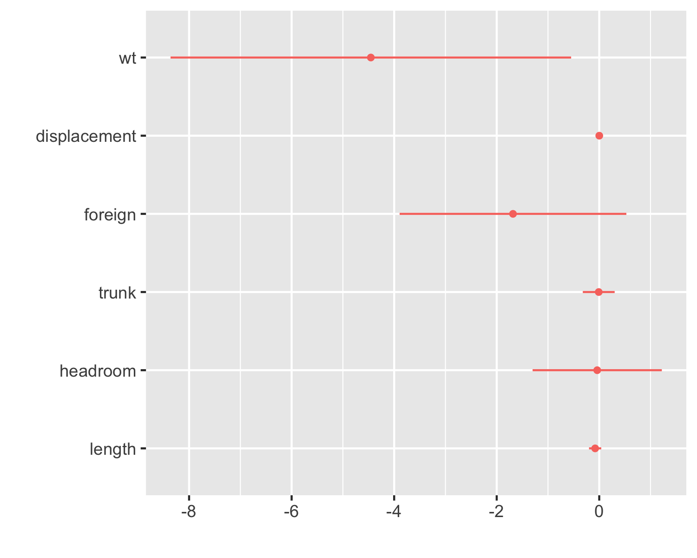

ssc install rsource, replaceHow to Switch Your Workflow from Stata to R, One Bit at a Time
note
r
A recent exchange on Twitter reminded me of my switch to R from Stata. I’d started grad school in 1999, before R hit 1.0.0, so I’d been trained exclusively in Stata. By 2008, I had way more than the proverbial 10,000 in-seat hours in Stata, and I knew all the tricks to make it do just what I wanted. I was even Stata Corp.’s on-campus rep at my university. Still, I’d started dabbling in R. Then as now, there were specific things R could do that Stata couldn’t.1 But how to get those advantages without throwing out my hard-earned skills and starting over as a complete n00b? The answer was: a little bit at a time.
Fortunately, it’s not difficult to switch back and forth within a given project, so you can start bringing some R to your Stata-based workflow while leaving it mostly intact. Then, if and when you find yourself doing more in R than in Stata, you can flip and start using Stata from within R.
So, install R and let’s get you started.
Running R from Stata
The trick to running R from within your do-file is first to save the data you want to pass to R, then call the .R file with the commands you want to run in R (the “R script”), then—if necessary—reload the R output into Stata.
While it’s also possible to use Stata’s shell command to run an R script (for illustrative purposes, let’s pretend it’s called my_script.R), Roger Newson’s rsource module makes it particularly easy. Install it as follows:
Unfortunately, the information rsource needs about your R installation is a bit different depending on your OS, but once installed, adding this platform-independent code to your do-file will run the script:
if "`c(os)'"=="MacOSX" | "`c(os)'"=="UNIX" {
rsource using my_script.R, rpath("/usr/local/bin/R") roptions(`"--vanilla"')
}
else { // windows
rsource using my_script.R, rpath(`"c:\r\R-3.5.1\bin\Rterm.exe"') roptions(`"--vanilla"') // change version number, if necessary
}Of course, you could choose to skip the whole if-else and just include the line that runs on your machine, but that’s not doing any favors to your collaborators or anyone else trying to reproduce your results. You might also just prefer to specify the rpath and roptions in your profile do-file,2 but again, then you’ll need to let others know to do the same or they won’t be able to run your do-file.
Note, too, that if you don’t have much R code to run, it might be easiest to just keep it in your do-file rather than using a separate script. You can do this using the terminator option to rsource, though a downside to this approach is that it doesn’t allow you to if-else the rsource command by your OS. In the do-file below, I also use the regsave module to save my results to pass them to R; install it using ssc install regsave, replace.
clear
set more off
sysuse auto, clear
gen wt = weight/1000
regress mpg wt displacement foreign trunk headroom length
regsave using "~/Desktop/R_Stata/auto_results.dta", replace
rsource, terminator(END_OF_R) rpath("/usr/local/bin/R") roptions(`"--vanilla"')
// rsource using my_script.R, rpath(`"c:\r\R-3.5.1\bin\Rterm.exe"') roptions(`"--vanilla"') // use this line instead if you run a windows box
library(tidyverse); # collection of all-around useful R packages
library(haven); # for importing Stata datasets
library(dotwhisker); # easy and beautiful regression plots, imho
auto_results <- read_dta("~/Desktop/R_Stata/auto_results.dta") %>%
rename(term = var,
estimate = coef,
std.error = stderr) %>%
filter(term != "_cons");
dwplot(auto_results);
ggsave("~/Desktop/R_Stata/auto_results.png", width = 5, height = 4);
END_OF_R
Running Stata from R
So maybe you’ve gotten to the point where you spend more of your time in R than in Stata, but there’s still a few parts of your work that you just want (or need!) to keep in Stata. Running a do-file (my_do_file.do) from inside your R script is easy with Luca Braglia’s RStata package:
if (!require(RStata)) install.packages("RStata"); library(RStata) # this will install RStata if not already installed
stata("my_do_file.do",
stata.path = "/Applications/Stata/StataMP.app/Contents/MacOS/stata-mp", # yours probably differs: use the chooseStataBin() command on windows or linux machines; on Macs, right click on the Stata app, select "Show Package Contents", then see what's in the Contents/MacOS/ directory
stata.version = 13) # again, specify what _you_ haveOn this side as well, it’s possible to set the arguments just once, in your .Rprofile file. In my case, these two lines do the trick:
options("RStata.StataPath" = "/Applications/Stata/StataMP.app/Contents/MacOS/stata-mp")
options("RStata.StataVersion" = 13)Since Stata isn’t free and open-source, it’s even more likely that others will have different setups anyway, so this may make the most sense. Be sure to comment your code to clue people in, though.
If you just want to use a single Stata command RStata::stata3 will do that for you, too, with no need for a do-file. From the RStata package documentation:
library("RStata")
# remember to set RStata.StataPath & RStata.StataVersion in your .Rprofile first! See https://www.rdocumentation.org/packages/RStata/
## Data input to Stata
x <- data.frame(a = rnorm(3), b = letters[1:3])
stata("sum a", data.in = x) . sum a
Variable | Obs Mean Std. Dev. Min Max
-------------+---------------------------------------------------------
a | 3 -.1888825 .8789378 -1.164719 .5405706## Data output from Stata (e.g., obtain 'auto' dataset)
auto <- stata("sysuse auto", data.out = TRUE). sysuse auto
(1978 Automobile Data)head(auto) make price mpg rep78 headroom trunk weight length turn displacement
1 AMC Concord 4099 22 3 2.5 11 2930 186 40 121
2 AMC Pacer 4749 17 3 3.0 11 3350 173 40 258
3 AMC Spirit 3799 22 NA 3.0 12 2640 168 35 121
4 Buick Century 4816 20 3 4.5 16 3250 196 40 196
5 Buick Electra 7827 15 4 4.0 20 4080 222 43 350
6 Buick LeSabre 5788 18 3 4.0 21 3670 218 43 231
gear_ratio foreign
1 3.58 Domestic
2 2.53 Domestic
3 3.08 Domestic
4 2.93 Domestic
5 2.41 Domestic
6 2.73 Domestic## Data input/output
(y <- stata("replace a = 2", data.in = x, data.out = TRUE)). replace a = 2
(3 real changes made) a b
1 2 a
2 2 b
3 2 cAnd you can embed several Stata commands in your R code as well:
data <- data.frame(y = rnorm(100), x1 = rnorm(100), x2 = rnorm(100))
stata("
sum y x1 x2
reg y x1 x2
", data.in = data).
. sum y x1 x2
Variable | Obs Mean Std. Dev. Min Max
-------------+---------------------------------------------------------
y | 100 .0236265 1.03123 -3.268936 2.58725
x1 | 100 -.1016676 1.002768 -2.997756 2.139994
x2 | 100 .0404716 .934101 -4.258553 2.231875
. reg y x1 x2
Source | SS df MS Number of obs = 100
-------------+---------------------------------- F(2, 97) = 2.01
Model | 4.19911148 2 2.09955574 Prob > F = 0.1389
Residual | 101.080895 97 1.04207108 R-squared = 0.0399
-------------+---------------------------------- Adj R-squared = 0.0201
Total | 105.280006 99 1.0634344 Root MSE = 1.0208
------------------------------------------------------------------------------
y | Coef. Std. Err. t P>|t| [95% Conf. Interval]
-------------+----------------------------------------------------------------
x1 | -.1795877 .1023142 -1.76 0.082 -.3826531 .0234778
x2 | -.1060174 .1098355 -0.97 0.337 -.3240104 .1119756
_cons | .0096589 .102709 0.09 0.925 -.19419 .2135078
------------------------------------------------------------------------------
. Summing Up
Moving parts of your work from Stata to R is totally feasible. Lots of people (for example, in the thread that touched this post off, Steve Rodgers) really want to take advantage of the superior graphics capabilities of R, especially the ggplot ecosystem, even while sticking to Stata for most of their work. Once your feet are wet, you may then decide R’s many other benefits (the free part, the super-helpful community, the transferable job skills you can teach your students, the free part, the cutting-edge stuff available years before it’s in Stata, the way RStudio makes it dead easy to do reproducible research through dynamic documents and version control, and, once again, the free part) make switching over all the way to be worth the additional marginal effort. Or you may not.
I completed the transition in three or four years, at my own pace: when I felt comfortable moving another chunk of my workflow over to R, I did, but not before. If I were doing it over right now, with the tidyverse packages dramatically reducing the slope of the learning curve, I might move faster, but there’s no rush, really. Do what works for you.
Additional Notes
- This post by John Ricco describing how to translate Stata data cleaning commands to the
dplyridiom will likely be helpful to those new to tidyverse-style R and wanting to move quickly. - Matthieu Gomez’s R for Stata Users is a more detailed phrasebook that will also be useful to new switchers (H/T Arthur Yip).4
- I also ran across the Rcall package while writing this up, but I haven’t tried it. You may find it useful.
- OTOH, these 2010 slides by Oscar Torres-Reyna were definitely useful to me back in the day, but as they pre-date both the tidyverse and RStudio—the wonders of which really cannot be overstated—they’re now more likely to cause you unnecessary confusion than help you if you’re a new switcher. Better to steer clear.
- Great complete treatments on how to do stuff in R:
- Modern Dive, by Chester Ismay and Albert Y. Kim
- R for Data Science, by Hadley Wickham and Garrett Grolemund
- A bit older, but I still love Winston Chang’s Cookbook for R as a reference, especially the Graphs chapter
- RStudio’s Cheat Sheets are also great references.
- When you’re ready to take the step to using R more than Stata, you’ll want to get fully set up on RStudio, which provides a front end for running R and can integrate with git and GitHub for version control (you will want this). The best resource that I’ve found for this process is Jenny Bryan’s Happy Git and GitHub for the UseR.
- The R community on StackOverflow is full of helpful people. As your Google-fu develops, you’ll find that links to StackOverflow are most likely to get you where you need to go.
- There are so many fantastic #rstats (dozens? hundreds?) follows on Twitter. With apologies to the—seriously—hundreds of others who’ve taught me tons of stuff over the years, I’m going to grit my teeth and rec just five to get you started: Mara Averick, Jenny Bryan, David Robinson, Julia Silge, and Hadley Wickham.
References
Bryan, Jenny. 2018. “Happy Git and GitHub for the useR.” http://happygitwithr.com/.
Chang, Winston. “Cookbook for r.” http://www.cookbook-r.com.
Ismay, Chester, and Albert Y. Kim. 2018. “Modern Dive: An Introduction to Statistical and Data Sciences via r.” https://moderndive.com/.
Kastellec, Jonathan P., and Eduardo L. Leoni. 2007. “Using Graphs Instead of Tables in Political Science.” Perspectives on Politics 5(4): 755–71.
Wickham, Hadley, and Garrett Grolemund. 2017. R for Data Science. O’Reilly. http://r4ds.had.co.nz.
Footnotes
Then, for me, it was multiple imputation, parallel computation, and the dot-and-whisker plots of regression coefficients introduced to political science by Kastellec and Lioni (2007). On this last one, see also the dotwhisker package. Now my list is different, but even longer. That’s not what I want to get into in this post, though. This post is how, not why.↩︎
See the technical note to the help file for rsource for details.↩︎
In the argot (heh), this means the
statacommand in theRStatapackage.↩︎Arthur also recommends vikjam’s Mostly Harmless Replication, which replicates most of the figures and tables of Mostly Harmless Econometrics in both Stata and R (and many in Python and Julia as well). Though not intended as a guide for switchers, the site will be helpful to fans of the book looking for ways to implement its advice in R.↩︎